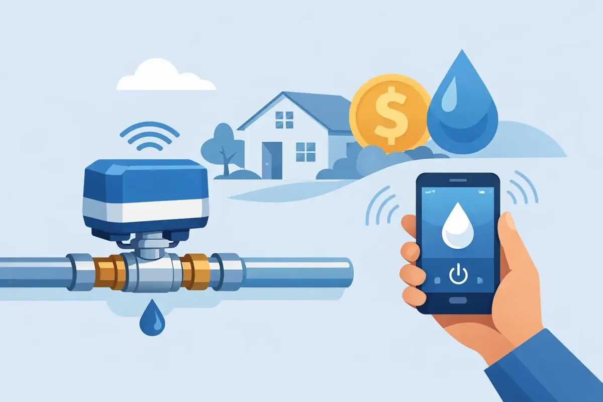

A ceiling stain, a wet cabinet floor, or a water bill that suddenly climbs can turn an ordinary day into a costly plumbing emergency. A smart water shutoff valve gives homeowners and property managers a chance to catch certain leaks early - and, on many systems, stop the water automatically before a small failure becomes major damage.
For Middle Tennessee families, this protection can be especially valuable when a home is empty during work, travel, school activities, or a weekend away. It is not a replacement for good plumbing maintenance or insurance. It is a practical layer of protection that helps you respond faster when water is going where it should not.
What a Smart Water Shutoff Valve Does
A smart shutoff valve is installed on the main water line serving a home or building. It monitors water use and, depending on the model, can alert you through an app when it detects unusual flow, a possible leak, or a risk of freezing conditions. Some systems can automatically close the main water supply when they identify a serious or continuous leak.
The goal is simple: limit how long water flows after a pipe, appliance hose, fixture supply line, or other connection fails. A burst washing-machine hose can release a surprising amount of water in a short time. Even a slow toilet leak or pinhole pipe leak can cause expensive damage if it continues unnoticed behind a wall or under a floor.
Most whole-home systems use one of two approaches. Flow-monitoring valves study the patterns of water moving through your plumbing and look for activity that does not make sense, such as steady flow for hours when no one is home. Other products use small leak sensors placed in higher-risk areas, such as near a water heater, washing machine, dishwasher, refrigerator, or under a sink. The best setup may use both.
A smart valve can protect against many plumbing leaks, but it cannot see every problem. A slow drain leak may not create enough flow to trigger an alert. Water that enters from a roof leak, foundation issue, or outdoor flooding is outside the valve's job. The system is most effective when it is paired with routine inspections and timely repairs.
When a Smart Water Shutoff Valve Makes Sense
A smart water shutoff valve is often a strong investment for people who want more control over the risk of water damage. It can make particular sense for a homeowner with an older property, aging supply lines, a water heater nearing the end of its service life, or appliances that have been in place for many years.
It is also useful for second homes, rental properties, vacant commercial spaces, and homes that sit empty during frequent travel. A landlord may not know about a leak until a tenant returns home. A facility manager may oversee several restrooms, break rooms, or equipment areas where an unnoticed leak can interrupt operations. An automatic shutoff system helps shorten that window of uncertainty.
Families with a finished basement, hardwood flooring, custom cabinets, or valuables stored near plumbing may also see clear value. The cost of installing a smart valve is usually small compared with replacing flooring, drying wall cavities, repairing cabinets, and addressing mold after a major leak.
Still, it depends on the property and the system. A newer home with accessible plumbing and a homeowner who is regularly present may have a different risk profile than an older home that is vacant for long periods. A qualified plumber can help you weigh the condition of your pipes, the location of your main shutoff, your water-use habits, and the cost of installation.
Common places where leaks begin
A whole-home valve protects the water supply beyond the main line, but it helps to understand the common sources of trouble. Water heater connections, washing-machine hoses, refrigerator ice-maker lines, dishwasher supply hoses, toilet fill valves, under-sink fittings, and aging pipe joints are frequent trouble spots.
Outdoor irrigation systems deserve attention too. If the irrigation line is connected after the home's main shutoff valve, the smart valve may not monitor it. Pool plumbing, exterior faucets, and separate water lines can also change what the system can protect. This is one reason professional planning matters more than simply choosing a product online.
Choosing the Right System for Your Property
Not all smart shutoff valves offer the same features. Some only send alerts and require you to close the valve manually. Others can close automatically when they detect an abnormal flow pattern. Some include individual floor sensors, while others depend mainly on flow monitoring. A few require a monthly monitoring fee, and others do not.
Before choosing a system, consider whether you want automatic shutoff, app alerts, remote control, sensor compatibility, and local alerts if your internet connection is down. Ask how the device handles normal high-water-use events, such as filling a large bathtub, running a sprinkler, or taking multiple showers. A good system should let you adjust settings so normal household water use does not create constant false alarms.
Power and connectivity are also worth discussing. Many smart valves require household power and Wi-Fi to provide their full range of app-based features. Some have battery backup or maintain the ability to close the valve during a power outage, while others may not. If reliable protection during an outage is a priority, make that part of the selection conversation.
Commercial properties may need a different approach. Higher demand, multiple water zones, code requirements, backflow devices, and building operations can affect where a valve belongs and how it should be configured. A one-size-fits-all installation can create headaches when it does not account for the way a building actually uses water.
Why Installation Details Matter
A smart valve is only as helpful as its placement and setup. It is generally installed on the main water line, often near the existing manual shutoff valve. The installer needs to confirm pipe size and material, available clearance, water pressure, electrical access if required, and whether the valve can be serviced easily in the future.
The work may involve shutting off the water, modifying pipe, installing the device, checking for leaks, reconnecting water, and testing operation. After installation, the system should be calibrated based on the property's normal water habits. That includes confirming that the manual shutoff remains accessible and that household members know where it is.
Professional installation also helps avoid a common mistake: assuming the valve protects plumbing it does not control. A plumber can identify separate branches, irrigation connections, water treatment equipment, water heaters, and other components that may need special consideration. If a whole-house filter, water softener, or reverse osmosis system is already installed, the plumbing layout should be reviewed so every component continues to perform as intended.
A Smart Valve Is Not a Reason to Ignore Maintenance
Technology is helpful, but it should not cause a property owner to overlook warning signs. Dripping fixtures, a toilet that runs intermittently, rusty water around a water heater, low water pressure, unexplained moisture, or an unusually high bill still deserve attention. A smart system may notify you of a problem, but it does not repair worn pipes, failing valves, or damaged appliance hoses.
It is wise to test the manual main shutoff periodically and make sure responsible adults know its location. If the valve is difficult to turn, leaks when operated, or is buried behind stored items, address that before an emergency. Replacing old rubber washing-machine hoses with quality braided hoses and maintaining water heaters can reduce risk as well.
For properties with a history of leaks, an inspection can reveal whether the real issue is water pressure, deteriorating supply lines, corrosion, poor past repairs, or a fixture that needs replacement. Stopping the water quickly is valuable, but preventing the failure in the first place is better.
Protection That Fits Real Life
The best leak-prevention plan is the one that matches your home, your schedule, and the condition of your plumbing. For one family, that may mean a smart valve with automatic shutoff and sensors under every major appliance. For another, it may mean repairing aging pipe first and adding a valve afterward. For a business, it may mean protecting high-risk areas without disrupting daily operations.
At Angle Stop Plumbing, our team can evaluate your plumbing layout, explain the practical options, and install equipment with the same respect we would want in our own homes. A smart shutoff valve cannot prevent every water problem, but it can give your family or property a better chance to avoid the long, stressful aftermath of a leak.